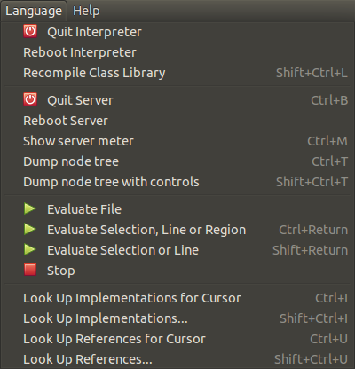

Introduction to SuperCollider
This article is the first of a series of articles on LMP that will explore the SuperCollider programming language. In addition to learning about the language and how to use the program interface, you will learn how to download SuperCollider and begin experimenting on your own. You will also find links to helpful documents and additional resources throughout the article and in the Links section at the end.
If you are already familiar with SuperCollider (or SC3 as it will often be referred to) you may still learn something here, but keep an eye out for future installments where we will dissect examples, provide strategies for making music with SuperCollider and more. If you have requests for follow-up articles, please leave your suggestions in the comments.
Table of Contents
- Introduction and History
- SuperCollider Design Overview and IDE
- Language Description
- Simple Code Exposition
- First steps
- Links and further reading
1. Introduction and History
As mentioned above, SuperCollider is an audio programming language where you can write code that makes noise (among other things.) Here is a really simple example:
Ex. 1: The Ubiquitous “Computer Thinking in Space”
And here’s what it sounds like:
SuperCollider is much more than this, though. It is an interpreted, object-oriented programming language that can be used for real-time audio DSP, algorithmic composition, sound design, interaction and improvisation, the creation of fixed-media pieces, audio installations and much more. If you want to do it, you can with SuperCollider.
First released in 1996, SuperCollider was open-sourced in 2002 and is now at version 3.6.6 with the release of 3.7 right around the corner. As a text-based audio programming language (as opposed to graphical programming languages like PureData, MaxMSP, etc) SC3 is a defacto descendent of the Music-N series of languages written by Max Mathews in the 1950s and 1960s. (For more on this, see a short post I wrote here.)
The prominent family trait shared between them is the Unit Generator, or UGen. A UGen is a pre-compiled object/instrument that does some sort of job for you. An example of a UGen in SC3 is the SinOsc object. As its name implies, SinOsc generates a sine tone. Practically, this means that while you could write your own sine oscillator object, one has already been provided. SC3 contains hundreds of UGens that include periodic oscillators, chaotic generators, filters, and signal processing and flow control objects. So, while you need to learn the SC3 language to make music with SuperCollider, you do not have to redesign the wheel.
Additionally, there are a number of things that SC3 does really well that are very difficult or impossible to achieve with a DAW, plugins, or a tracker. Here are a *few* examples.
- Randomness and uncertainty: real, acoustic sounds are complex and contain a good amount of randomness at the micro scale. Often, electronic instruments do not sound great because they lack this complexity and micro-varation. It is very simple to introduce both micro and macro randomness to signals and structures in SC3.
- Modulation / Control Signals: have you ever wanted to modulate one sound with another? Or even have an audio file affect the pitch, timbre, or amplitude of a MIDI track or vice versa? In SC3 any signal can modulate any other signal.
- Automation and Generation: it is trivial to introduce indeterminate elements into code that can be run x number of times to produce variations and permutations. So, instead of having to hard-code parameters by hand and manually change them repeatedly, processes can be automated so you only have to sift through the results until you find something you like.
You can see examples of all of these features in Section 4 below, the Brief Code Exposition. Before we get there, though, lets look at how the SuperCollider program and language work.
2. SuperCollider Design Overview and IDE
For simplicity’s sake, let’s consider SuperCollider as essentially three parts:
- The IDE: where you write code and interact with the client/server
- The Interpreter / client: interprets your SuperCollider code - acts as client to the synthesis server
- The synthesis / server -- where all audio processing takes place
As a client/server application, code is written and evaluated in the language and sent via OSC messages to the server where all audio computation takes place. This may sound a bit wonky, but one big advantage to this approach is that any client on any computer can send OSC messages to any server on any computer and vice versa. Another advantage of this is that the language and server can be restarted independent of each other in case of an error or a crash.
Most of the time when you want to make sound with SC3 you will fire up the application, write some code and evaluate it to send it to the server to make sound. If this sounds un-musical, don’t worry, you can also use your MIDI controller or your iPhone or Android to control SuperCollider because it can send and receive MIDI and OSC messages as well as process audio and control signals. It can also read and write text files and read and write audio files to disk. Furthermore, SuperCollider can also interact with the unix command on both Linux and OS X systems. In short, it can communicate with any kind of electronic instrument or computer program including over a network.
While SuperCollider is extremely flexible and accommodates many modes of interaction, at the very least you will have to create code and interpret that code in order to start audio processing. Let's look at the IDE to understand how this is done.
The SuperCollider IDE
As mentioned above, since version 3.6, SuperCollider has been available as an IDE, which stands for Integrated Development Environment. The IDE replaced numerous graphical front-ends to the language and provides a unified environment to make music and accomplish audio-related research.
{kind=link}
The red box encapsulates the current open document. This is where code is created and evaluated.
The green box is the post window. This window provides feedback and debugging information for the code you evaluate and the IDE functions you call such as re-compiling the class library or booting the server. Here you can see that I have evaluated the code “YOUR CODE GOES HERE”.postln; which does nothing but post what is contained in the string (between the “”) to the post window.
The blue box encapsulates the help and documentation window. The built-in help system is indispensable to the novice and the experienced coder alike. It allows you to find help documents for almost every program class (object) as well as browse tutorials. To get help for any object you only have to
- Select the object for which you want information, lets say the SinOsc UGen above (exclude the . and any messages that follow it)
- Press ctrl + d (or cmd + d on Mac) and the help file for the SinOsc UGen will be displayed in the Help Browser.
In addition to seeing all of the available instance methods and arguments for any given class or UGen, there are often code examples that use that specific object at the bottom of the help file. This is very useful for discovering extended and non-intuitive uses for UGens you come across in your exploration of the program.

Another element of the IDE are the dropdown menus. Above we see the Language menu, one of the most useful in the IDE. Using it you can boot or reboot the interpreter or server as well as stop running audio. You can also get information about objects within the language. Note that you can do much of the above using keyboard shortcuts or commands directly from the code window. For example, evaluating
will boot the default sound server, as will pressing ctrl + b (or cmd + b on a Mac.)
So far we have talked generally about the application, communication protocols, IDE and usage. Now we are going to look at the language itself.
3. Language Description
As I mentioned above, SC3 is an interpreted, object-oriented programming language. As an object oriented language, everything in SC3 (numbers, arrays, UGens, etc) is an object that
- has a state of being
- returns values or performs functions in response to messages sent to the object.
Messages (the words that follow the dots at the end of Ugens or other Classes) are used to access features of the object and to “get things done” by supplying necessary information. To illustrate this, let’s use the sandwich analogy.
Let’s say we want to make a sandwich. The sandwich we want is a Tofurkey® lettuce and tomato sandwich. In this case, the sandwich is made of two bread objects, a Tofurkey® object, a lettuce object, and a tomato object. Our bread object takes two arguments, the type of bread desired, and a number that describes how many pieces we want. We will assign the Bread object to the variable ‘bread’ for more concise use with the ‘sandwich’ object later.
Lets define some other ingredients. You can probably guess what the arguments are using the above pattern.
var lettuce = Lettuce(3);
Next we will create a sandwich variable that references a Sandwich object. We use the ‘make’ message on the object and supply the bread argument so the Sandwich class knows what kind of bread and how much is being used. Then, we use the .with message to fill the bread sandwich with tasty ingredients.
So the variable ‘sandwich’ is now an instance of the class Sandwich that is defined as have two slices of wheat bread, Tofurkey®, three slices of lettuce, and two seeded slices of tomato. Of course, once made we know what to do with it...
The above example implies that the Sandwich class responds to at least three messages, .make, .eat, and .with, and that it does something when it receives those messages. Using the analogy above, the .eat message makes total sense with our Sandwich class, but might not with another made-up class, for example the Automobile class. However, the .make message does make sense in both cases if you are building a sandwich or building a car. The fact that you can use the same message (.make) with different classes is called Polymorphism. The important thing to remember is that the Automobile class receiving the message .make *may* do something completely different or unexpected with it such as make the car start or make the ejector seat fire. It's up to the object to define what .make means to it rather than .make impose an action on the object. To see a good real-world example of this, type 'play' into the IDE, select it and hit ctrl + d to pull up the implementations of it in the Help Browser. Now have a look at what the Function class and the Routine class do with the .play message.
Okay, enough of analogies, let’s look at some real code.
4. Simple Code Exposition
Here's our old friend the “Computer Thinking in Space”.
The FreeVerb object is a reverb UGen. The .ar message tells it to run at the audio rate. The stuff that comes after it, SinOsc.ar(..., are arguments to the object. Arguments to UGens supply signals (inputs) or data necessary for the class to work. FreeVerb's audio rate arguments look like this:
mix = dry/wet balance.
room = the size of the virtual, reverberant space.
damp = the amount of high-frequency damping.
mul = amplitude (how loud the sound coming out is)
add = DC offset
In our example, the input is a SinOsc UGen. All the other arguments that supply information about the size of the room, the mix, etc, are left to their defaults. (Again, you can copy and paste this code into SC3 and select FreeVerb and press ctrl+d to pull up the Help File. It will show you all the input arguments for the class.)
The SinOsc object only has one argument supplied as well, that for the frequency of the oscillator.
The LFNoise0 object is a step noise UGen that is supplying the frequency for the SinOsc UGen. Ten times a second, the LFNoise0 object chooses random values between 100 Hz and 2100 Hz.
The .clip at the end of the SinOsc Ugen clips its output, changing it from a pure sine tone to a slightly squared-off tone. The ! 2 message duplicates the whole shebang so that the audio, which would have gone only to the left channel, goes to the right channel as well.
Just to blow your mind, here’s another way to code the exact same thing:
This is a good way to illustrate that in SuperCollider, there is almost always more than one way to code something. You may find the above harder or easier to read. The only difference is that instead of nesting the UGens inside each other, we use variables to reference them. For clarity, I’ve also moved the play message to the end of the function and put the dot in front of it, but the code sounds exactly the same.
To illustrate just how just how dynamic and expressive the SC3 language can be, lets look at some SCTweets -- short 140 character snippets of code.
Ex. 2: Untitled -- Jonatan Liljedahl (from sccode.org)
Ex. 3: "The Record Player is Broken" -- Scacinto (me!)
Here is the same code run a second time.
Ex. 4: "auto rhythm" -- Jonatan Liljedahl (from sccode.org)
Ex 5.a: selection from "more, more, more ( was Re: endless Roger Corman movie" --Alln4tural
Ex 5.b: selection from "more, more, more ( was Re: endless Roger Corman movie" --Alln4tural
Notice how, in Ex 5.b, small code changes make a big sonic difference.
Still, these one-liners are limited in their scope for change and complicated pieces often involve a lot of code. Here’s a slightly more complicated example where musical events are scheduled in time.
Ex. 6: Drones and Pulses -- Scacinto
)
Remember at the beginning of the article where I talked about some of the things that SC3 is good at and mentioned micro and macro randomness? Because I've used a lot of random features in my code (the .choose and rrand objects), the music is slightly different each time it is run. Here's another recording of the same code evaluated a second time:
Without getting bogged down in the details, the above example does a few simple things.
- First, it defines some synths using the SynthDef class. A SynthDef is basically a recipe for a synth that is used as a blueprint to create a Synth (capitol S) when one is created later using the Synth.new( ) code.
- Next, it defines a few functions where I supply pitch information to those synths. I then put those functions (the code between the curly brackets) into an array called ~sections.
- At the end, the .fork method is used to wrap the functions in the ~sections array into Routines so I can schedule them in time. The only timing used is the .wait statements that you see at the end of the functions that say how long to wait before either creating more synths or moving on to the next section.
5. First steps
You now know something about SC3, what it is, how it works, and you’ve seen enough examples to perhaps give you a headache. What comes next? Download SuperCollider and get started of course!
- Here is a link to the download page for the program. I have written many guides on installing SC3 over the years, but these days installation is pretty easy. Pick your OS and download the installer or install it from your Linux distribution’s repositories.
- Next, open the program by double-clicking the application, or on Linux start JACK (if it’s not already running…) and then
- either type ‘supercollider’ or ‘scide’ into your launcher or
- run ‘scide’ from the terminal.
- Boot the sound server from the Language menu or by pressing ctrl + b (cmd + b on Mac). Alternatively, you can start coding right now and type s.boot; in the code window and then, with the cursor on the code line press ctrl + return (cmd + return on OS X) to evaluate it.
- Either type some code, or just copy and paste some from this article or from sccode.org. Try the “Thinking Computer in Space” example from above.
- When you can’t stand the retro-awesomeness any more, press ctrl + . (period) or cmd + . on OS X to stop the audio.
If you feel adventurous, you can copy and paste the above “Drones and Pulses” code into SC3 and run it yourself.
- Double-click the opening or closing parenthesis to select all the SynthDefs and evaluate that first (ctrl + return).
- Then do the same for the next chunk of code.
Remember you can always press ctrl + . to stop the audio at any time. Try changing the numbers in the ~array1/2/3 arrays and listen to how the harmonies change.
Congratulations, you’re a SuperColliderer!
6. Links and Further Reading
Once you have collected a bunch of code you like and have settled on learning SC3 as your new life-goal, you should work your way through the getting started tutorials available in the help browser. Just click the “Home” tab at the top and then scroll down to the tutorials. They are required reading for proceeding on the SC3 path. Don’t get bogged down in trying memorize every little thing. Just try to get the feel for the big issues like the Client vs Server issues, Synths and SynthDefs and things like Routines and Patterns. Additionally:
- You absolutely NEED to subscribe to the SuperCollider mailing list and troll the Nabble forum.
- SC3 code/example site: this is a great site with lots of code you can download and run.
- SuperCollider Book: this book is now slightly out of date, but it contains a lot of really useful information and lots of example code.
- I link to Nick Collins below, but I'm linking to his tutorials here because there is a metric tonne of great information there you shouldn't miss.
And last but not least here are some links to people working, developing, and making music with SuperCollider.
People (in no order)
- Joshua Parmenter
- James Harkins
- Scott Wilson
- Dan Stowell
- Andrea Valle
- Nick Collins
- Stelios Manousakis
Groups
Written by Scott Petersen